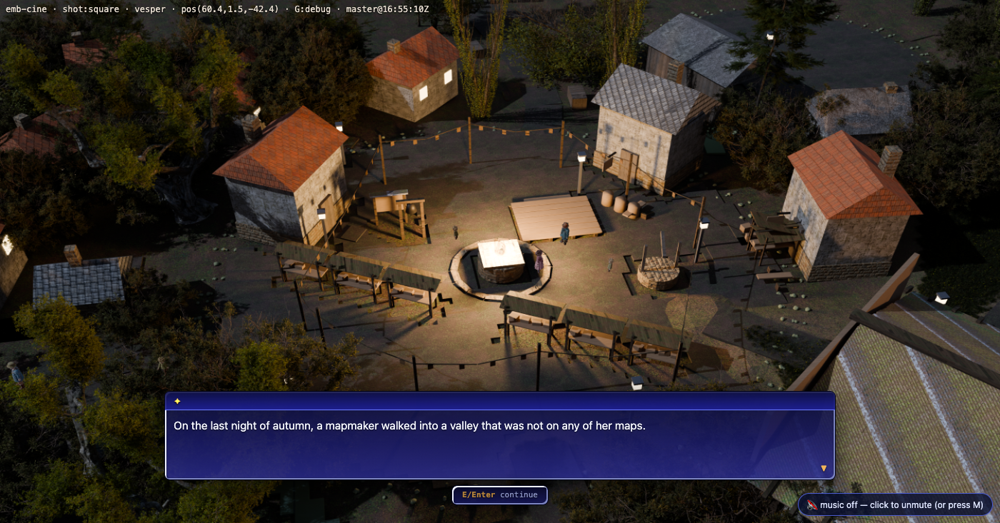
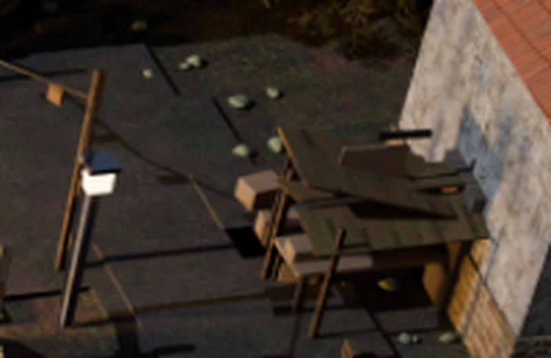
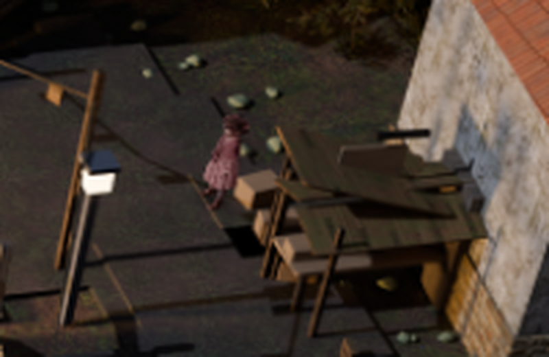

2026-08-02 · emb-cine / shot square · player standing at (60.4, −42.4), the
Chapter One greeting spot · tools/findability_test.mjs
The user could not clear Chapter One's first objective because they could not find Poppy.
Her post sat 0.9 m from her own festival stall, and from square — the only
shot whose band owns that ground — the stall's canopy (3.26–3.82 m up, ~2 m nearer
along the view ray) covered her entire body column. play3d's exact-pixel depth occlusion
discarded every one of her pixels. She was in the scene, Object3D.visible true,
projecting to a valid on-screen pixel, and invisible.



| who | from | to | body clearing the plate |
|---|---|---|---|
| poppy | 49.76, −44.29 | 51.40, −43.00 | 2.8% |
| → 100% | |||
| mochi-emb | 56.20, 11.60 | 56.60, 12.20 | 0% → 100% (and under the waystone lantern) |
| emb.miller | 48.02, −60.54 | 48.62, −59.54 | 0% → 100% |
| mochi (del-cine) | 57.43, −28.10 | 57.93, −27.70 | 29% → 100% |
del.deckhand (Dellhollow, ambient, no beat): 0% of the body clears
shelf-east, and his post is 0.70 m outside every band box. The nearest legal
fully-visible cell is 4.52 m away — too big a move in a red-teamed town for a villager no
objective names, so the gate warns rather than fails.
emb.miller now clears the depth map into plate ground luminance 0.004.
Visible is not readable; that one is the lighting lane's.